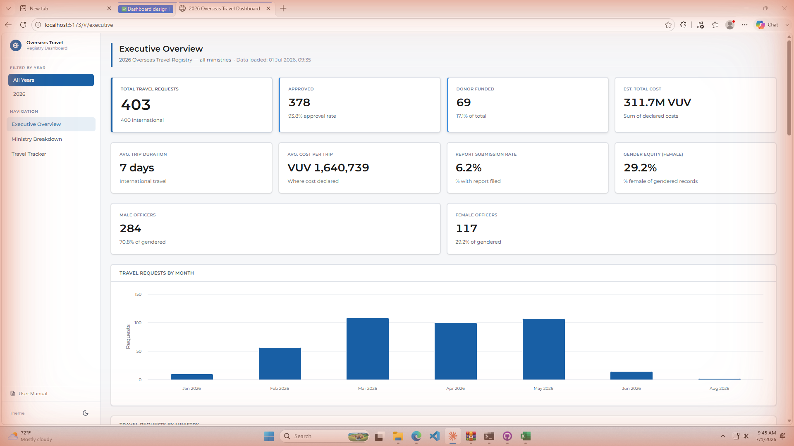
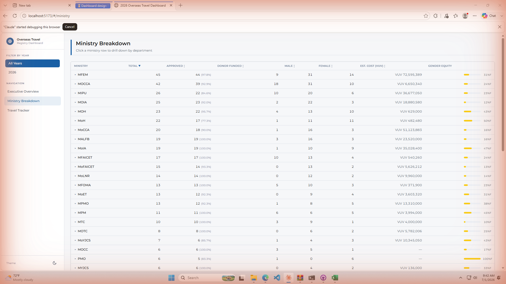
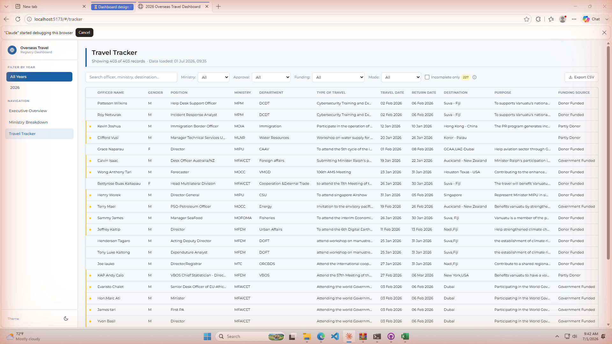

User Manual
2026 Overseas Travel Registry Dashboard — Version 1.0 · Published 1 July 2026
What is this dashboard?
The 2026 Overseas Travel Registry Dashboard is an interactive web application that visualises all overseas (and domestic) travel requests submitted by Vanuatu Public Service Commission officers for 2026. It reads directly from the master Excel workbook and presents the data across three analytical pages:
- Executive Overview — KPI cards, charts, gender equity, data quality
- Ministry Breakdown — per-ministry statistics with drill-down
- Travel Tracker — full searchable & filterable record table with CSV export
The dashboard is hosted on GitHub Pages and updates automatically whenever the Excel file is pushed to the repository. No server or database is required — the browser loads the Excel file directly.
Accessing the dashboard
The dashboard is a public web page. Open it in any modern browser (Edge, Chrome, Firefox, Safari):
No login is required. The dashboard works on desktop and tablet screens. On small screens, tap the ☰ (menu) icon in the top-left corner to open the sidebar.
Page layout & navigation

The screen is divided into two areas:
- Left sidebar — year filter buttons at the top, navigation links in the middle (Executive Overview, Ministry Breakdown, Travel Tracker), and the dark-mode theme toggle at the bottom.
- Main content area — the active page, with a title bar showing the data load timestamp.
Filtering by year
The Filter by Year buttons at the top of the sidebar apply to all three pages simultaneously. Clicking a year button restricts every chart, KPI card, table, and count to only the travel records with a travel date in that year.
- All Years — show every record regardless of travel date (default)
- 2026 (or other years listed) — show only records where the travel date falls in that year
Executive Overview
This is the main summary page. It opens by default when you load the dashboard.
KPI Cards
Eight metric cards appear in two rows at the top:
| Card | What it shows |
|---|---|
| Total Travel Requests | Total number of rows in the dataset (international + domestic) |
| Approved | Records with approval status "Approved" and the approval rate % |
| Donor Funded | Count and % of trips funded by donors (fully or partly) |
| Est. Total Cost | Sum of all declared estimated travel costs in VUV |
| Avg. Trip Duration | Average days between travel date and return date (capped at 90 days to exclude data errors) |
| Avg. Cost per Trip | Average estimated cost across records that have a declared cost |
| Report Submission Rate | % of records that have a report filed |
| Gender Equity (Female) | % of gendered records where the officer is female |
Two additional cards show raw counts of Male Officers and Female Officers.
Charts
- Travel Requests by Month — bar chart showing how many trips depart each calendar month
- Travel Requests by Ministry — horizontal bar chart; toggle between "By Requests" and "By Cost" tabs
- Funding Source — donut chart (Donor Funded / Government Funded / Partly Funded / Unknown)
- Approval Status — donut chart (Approved / Not Approved / Pending)
- Funding Trend — stacked line/area chart showing donor vs. government funding per month
- Top Donors — horizontal bar chart of the organisations funding the most trips
- Gender Distribution — donut chart (Male / Female / Not recorded)
- Travel Mode — donut chart (Group/Mission vs. Individual)
- Top Destinations — horizontal bar chart of the most common destination countries/cities
Data Quality Panel
At the bottom of the page, a panel shows the completeness of five key fields (Estimated Cost, Approval Status, Report Filed, Gender, Destination) as progress bars, plus an overall data quality score out of 100%.
Ministry Breakdown

This page gives a per-ministry summary table with the following columns:
| Column | Description |
|---|---|
| Ministry | Ministry acronym |
| Total | Total travel requests from that ministry |
| Approved | Approved count and approval rate % |
| Donor Funded | Number of donor-funded trips |
| Male / Female | Gendered officer counts |
| Est. Cost (VUV) | Total declared cost for the ministry |
| Gender Equity | Mini progress bar showing the female % at a glance |
Sorting
Click any column header to sort ascending; click again to sort descending. A small arrow (▲▼) indicates the active sort direction. The default sort is by Total requests (highest first).
Drill-down panel
Click any ministry row to expand a detail panel below the table. The panel shows a breakdown by Department within that ministry, listing total trips, approval rate, and cost per department.
Click the same row again (or another row) to collapse or switch the drill-down.
Gender Equity Chart
Below the table, a stacked horizontal bar chart shows the male/female split for the top 15 ministries by total requests. This gives an at-a-glance view of gender representation across the public service.
Travel Tracker

The Travel Tracker shows every individual travel record as a row in a scrollable table. It is the most detailed view in the dashboard.
Search
Type in the Search officer, ministry, destination… box to instantly filter rows. The search matches across Officer Name, Ministry, and Destination fields simultaneously.
Drop-down filters
Four drop-down filters refine the list further:
- Ministry — select one ministry or "All"
- Approval — filter by Approved / Not Approved / Pending
- Funding — filter by funding source category
- Mode — filter by Group/Mission or Individual travel
Incomplete only filter
Tick the Incomplete only checkbox to show only records that are flagged as incomplete. The badge shows how many incomplete records exist in the current filtered set.
- Estimated travel cost (blank or zero)
- Approval status not yet set (showing as "Pending")
- Officer gender not recorded
Columns in the table
The table contains 18 columns. Scroll horizontally to see them all:
Officer Name · Gender · Position Title · Ministry · Department · Type of Travel · Travel Date · Return Date · Destination · Purpose · Funding Source · Est. Cost (VUV) · Imprest Total · Donor Name · Approval Status · Report Filed · Travel Mode · Sheet (International / Domestic)
Exporting data (CSV)
On the Travel Tracker page, click the ↓ Export CSV button (top-right of the table) to download the currently visible rows as a comma-separated values file.
The downloaded file is named overseas_travel.csv and can be opened in Excel or any spreadsheet application.
Dark mode
Click the moon / sun icon at the very bottom of the left sidebar to toggle between light and dark themes. The preference is saved in your browser and will persist when you return to the dashboard.
Step 1 — Update the Excel file
All dashboard data comes from a single Excel workbook. The workbook must contain exactly two sheets:
- International Travels — overseas travel records (sheet 1)
- Domestic Travels — in-country travel records (sheet 2)
To update the data:
- Open the master workbook:
Copy of 2026 Overseas Travel Registration.xlsx - Add new rows or update existing rows in the International Travels or Domestic Travels sheets. Do not remove column headers.
- Save the file with the same name in the same location.
- Copy (overwrite) the saved file to the repository folder at:
public/data/overseas_travel.xlsx
DD.MM.YYYY (e.g. 15.03.2026) or allow Excel to store them as date cells. Avoid free-text entries like "15/03/2026 & 22/03/2026" — only the first date would be read.
Step 2 — Publish the update using GitHub Desktop
GitHub Desktop is a free, easy-to-use application that sends your updated Excel file to GitHub so the dashboard can rebuild. It does not require any technical knowledge — just a few clicks.
-
Open GitHub Desktop.
You will see the repository name at the top-left (e.g. OverseasTravelRegistry). On the left panel, under Changes, you should seeoverseas_travel.xlsxlisted with a tick beside it. This means GitHub Desktop has detected your updated file.File not showing? Make sure you saved the Excel file and that you copied it into the correct folder:public/data/overseas_travel.xlsxinside the repository folder on your computer. -
Write a short description of the change.
At the bottom-left of GitHub Desktop, there is a Summary box. Type a brief note such as:
Update travel data — July 2026
This message is for your records only — it does not appear on the dashboard. -
Click "Commit to main".
This saves a record of your change on your computer. The button is at the bottom-left of the screen. -
Click "Push origin".
This button appears at the top of the screen after you commit. Clicking it sends your change to GitHub. The dashboard will automatically start rebuilding — this usually takes 1–2 minutes.No internet connection? The Push step requires an internet connection. If the button is greyed out or shows an error, check your connection and try again.
Step 3 — Verify the deployment
- Go to the repository on GitHub.com and click the Actions tab.
- Look for the most recent workflow run labelled Deploy to GitHub Pages. A green tick ✓ means the deployment succeeded.
- Open the dashboard URL in your browser. If the data does not refresh immediately, do a hard reload: Ctrl + Shift + R (Windows / Linux) or Cmd + Shift + R (Mac).
- Check the subtitle under the page title — it shows the data load timestamp and record count to confirm the new data is live.
Required Excel columns
Each sheet must contain these column headers in row 1 (extra columns are ignored). Spelling must match exactly (extra spaces are tolerated and trimmed automatically):
| Column header in Excel | Dashboard field | Required? |
|---|---|---|
| OFFICER NAME | Officer Name | Yes |
| GENDER | Gender (M / F) | Recommended |
| POSITION TITTLE | Position Title | Recommended |
| DEPARTMENT | Department | Recommended |
| MINISTRY | Ministry | Yes |
| TYPE OF TRAVEL | Type of Travel | Recommended |
| TRAVEL DATE | Travel Date | Yes |
| RETURN DATE | Return Date | Recommended |
| DESTINATION | Destination | Recommended |
| TRAVEL PURPOSE AND DETAILS ON ITS BENEFITS | Purpose | Recommended |
| SOURCE OF FUNDING | Funding Source | Recommended |
| ESTIMATE TRAVELS COSTS | Estimated Cost | Recommended |
| IMPREST TOTAL | Imprest Total | Optional |
| NAME OF THE DONOR | Donor Name | Optional |
| APPROVED/NOT APPROVED | Approval Status | Yes |
| REPORT | Report Filed | Recommended |
| MISSION/INDIVIDUAL TRAVEL | Travel Mode | Optional |
src/lib/data.ts.
Glossary
| Term | Meaning |
|---|---|
| VUV | Vanuatu Vatu — the currency used for all cost figures |
| Donor Funded | Trip costs are paid by a third-party donor organisation |
| Partly Donor | Some costs are donor-funded, some are government-funded |
| Government Funded | Trip costs are paid by the ministry or government budget |
| Pending | Approval status has not been recorded in the Excel file |
| Incomplete record | A record missing estimated cost, approval status, or officer gender |
| Group/Mission | Travel undertaken as part of a group or official mission |
| Individual | Travel undertaken by a single officer independently |
| Gender Equity % | Female officers as a percentage of all officers with a recorded gender |
| GitHub Pages | The free static web hosting service where the dashboard is deployed |
| GitHub Actions | The automated build-and-deploy pipeline that publishes the dashboard when code is pushed |
Troubleshooting
| Problem | Likely cause | Fix |
|---|---|---|
| Dashboard shows old data after a push | Browser cache | Hard reload: Ctrl+Shift+R |
| Some records have blank Travel Date on the Tracker | Date stored as text in an unusual format | Re-enter the date in the Excel file as a proper date cell (DD.MM.YYYY) |
| A ministry is missing from charts | The Ministry cell is blank in that row | Fill in the Ministry column in Excel for those rows |
| Female officer count changes when switching year filter | Some female records have undated or multi-date travel entries | Fix travel dates in Excel; those records appear in all year views until corrected |
| GitHub Actions deploy fails with red ✗ | Build error or Pages not enabled | Check Actions logs; ensure GitHub Pages is set to "GitHub Actions" source in repo Settings → Pages |
| Dashboard shows "Failed to load data" | Excel file missing from public/data/ or corrupt |
Verify public/data/overseas_travel.xlsx exists in the repo and re-push |
| Domestic travel records not showing | Sheet renamed or not present | Ensure the second sheet is named exactly "Domestic Travels" |